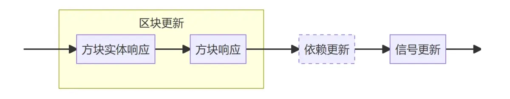
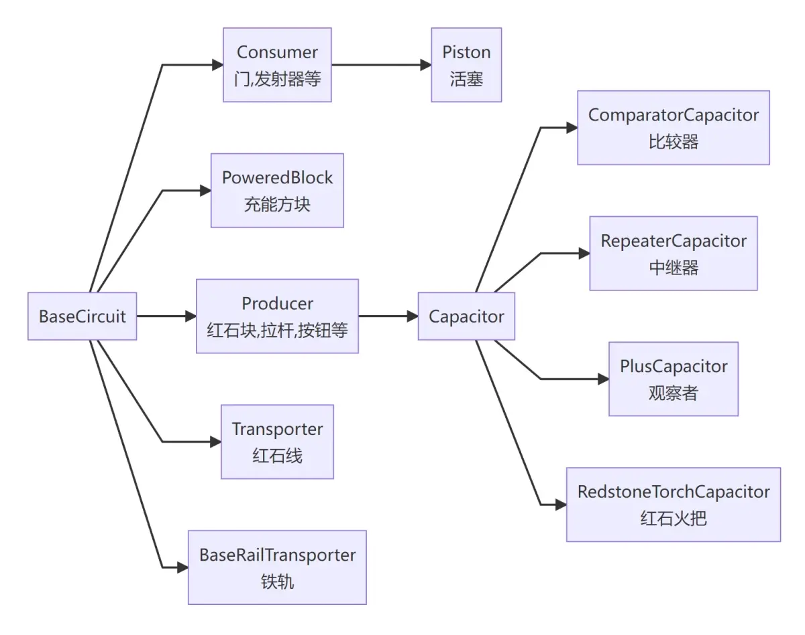
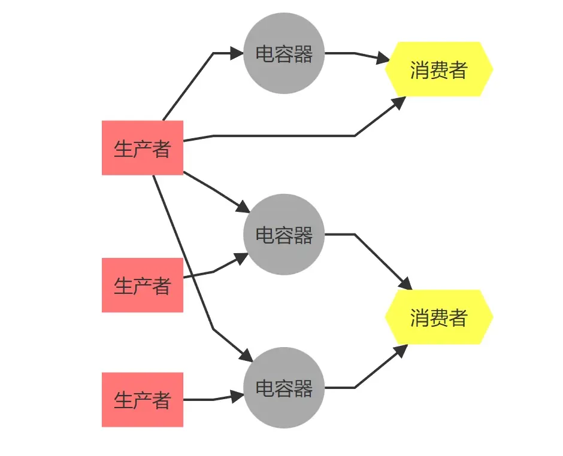
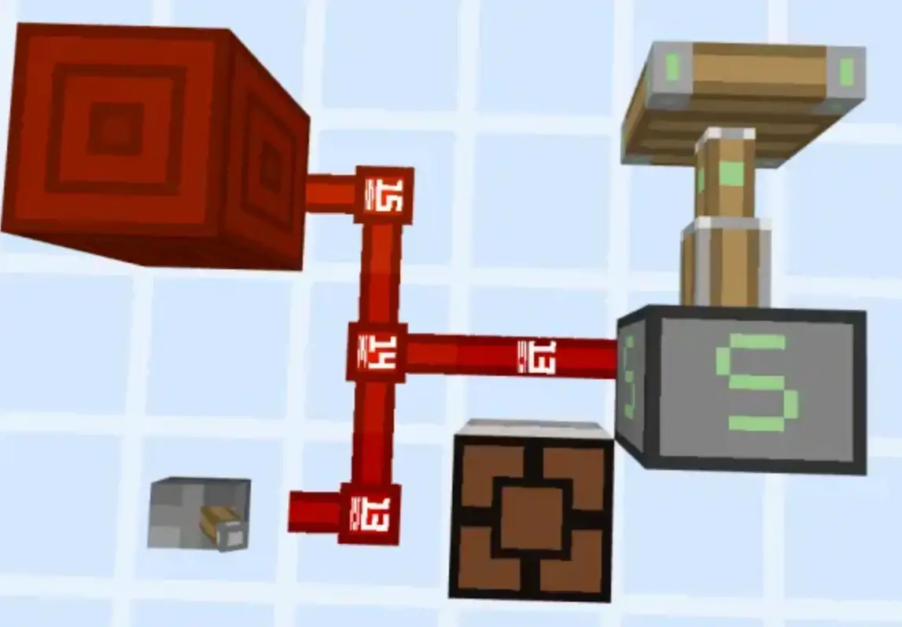
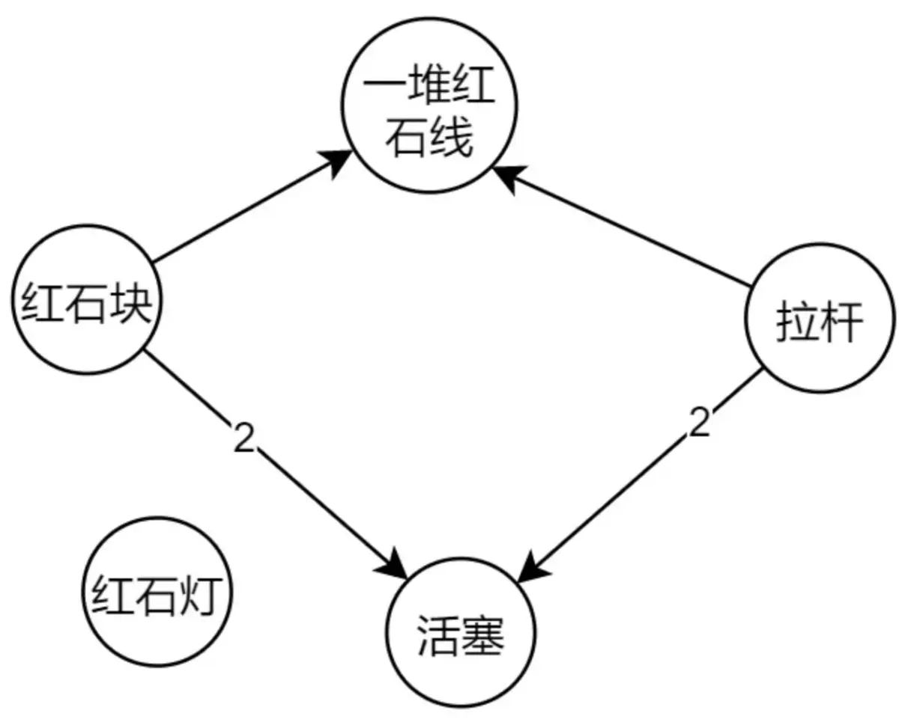
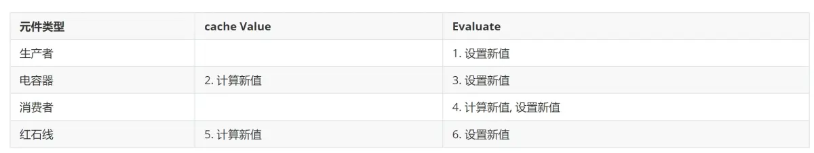

Minecraft基岩版红石系统设计简述
Minecraft基岩版红石系统设计简述
这期主要是对之前几篇的总结和补完，有大量重复内容，应该会比较长，不管有没有屁用的细节都提一嘴。
1. 红石系统是如何产生的
1.1 信号和响应分离的设计模式
基岩版的红石系统在设计上，信号和响应这两部分的功能是相互独立的，分属于两个不同的原件中，且两个部分独立运作，基本互不影响。负责信号的部分叫电路原件(Circuit Component),所有与红石相关的方块都包含这一原件的子类；负责响应的部分可能是方块(Block)，也可能是方块实体(Block Actor)，这部分和其他一般功能性方块没有区别。
在游戏主循环中，同一gt内红石信号计算和响应是在不同的阶段完成的，这里姑且将其称之为信号更新阶段和响应阶段（包含方块实体响应和方块响应），下图表明了这些阶段在主循环中的相对位置。

游戏主循环中各个阶段的先后顺序
(请暂时先无视图中的“依赖更新”阶段，后文再提及)
其中响应阶段中原件根据自身的红石信号值（从电路原件中获取）判定接下来的行为。能接受响应的原件本质上是一个接受外部输入的状态机，这个状态机每隔1gt更新一次，但是外部输入（也就是红石信号）2gt才更新一次，因此状态机的响应是有延迟的，这也说明了为什么好多所谓的0t、瞬时现象在基岩版永远无法产生。
根据原件的自身属性可以将响应分为两种：
- 来自方块实体的响应，其内部调用函数为XXXBlockActor.tick，常见的例子有活塞根据自身信号更新推出状态、漏斗根据自身信号检查是否被锁住、发射器根据自身状态决定是发射物品等
- 来自非方块实体的响应，其内部调用函数为xxxBlock.onRedstoneUpdate，常见的例子有红石线根据自身信号值更新数据值，各种门根据自身信号值修改开关状态等。
而信号阶段表示电路原件内部信号值的计算、缓存以及设置行为，这一阶段除了修改电路原件内部的信号值外不会产生任何额外行为，因此在不借助任何辅助手段的情况下玩家无法判定电路原件内部的信号值是否发生变化，所有发生的变化都是由响应阶段产生，包括但不限于任何碰撞箱，贴图等的变化。
此外，响应阶段是在区块更新内部完成的，而信号更新不依赖区块加载(它的限制后文再说)，因此你看到非加载区块外部的红石电路一动不动，不代表其内部的信号更新停止，只是单纯没有响应阶段而已。
接下来的全部篇幅，我们主要关注信号更新阶段。
1.2. 信号的流动路径 -- 抽象原件的形成
在Mojang的设计中，每个和红石相关的方块内部都有且只有一个红石原件，红石原件根据其内部信号流动的特点被分为四个大类:
- 生产者(Producer)：发出信号的原件,如红石块，拉杆，按钮等
- 消费者(Consumer)：消费信号的原件，即只能接受生产者产生的信号并产生响应的原件，如活塞，发射器等
- 传输者(Transporter)：帮助生产者搜索消费者的原件，除此之外没有实际价值，主要是红石线
- 充能方块(Powered Block)：灵活且特殊的一类，用于辅助实现红石系统内的充能机制
这其中有一类特殊的生产者，它们既能发出信号，也能消费信号，被称之为电容器(Capacitor)，它是Producer的子类别，全游戏中有且仅有四种电容器：红石火把、侦测器、红石中继器和红石比较器。
注意，在后面的讨论中说到生产者是不包含电容器的。
此外，活塞是唯一一个只能从五个方向激活的消费者，因此它属于消费者子类下特殊的一类（并不是因为它的推拉性质）。
下图展示了上述红石原件之间的继承和类别关系(所有的红石原件都继承自抽象类Base Circuit Component):

红石原件类型继承树
关于信号的生产、消费在这里有直观的理解和感受即可，下面讲电路构建的时候会详述。
1.3. 从红石原件到红石电路 -- Mojang的网络流设计
Mojang使用类似网络流的模型来表达一个红石电路。在Mojang的设计中，红石信号是流动的、衰减的、有方向性的。红石信号永远都是从生产者流向电容器，然后从电容器流向消费者（或者跳过电容器直接流向消费者）。且初始信号的最大值恒定为15，每流过1个逻辑距离，信号值就会衰减1。下面对这句话做简单的解释：
- 在游戏内部用另外一个词"源(Source)"来表示生产者，生产者就是红石信号的源头，负责为消费者提供红石信号
- 没有衰减结束的红石信号(即大于0)才会被消费者接收，消费者在下一个gt的响应阶段产生外部行为
- 如果只有生产者和消费者，红石系统的局限性是很大的，因为信号的初始强度、衰减能力和延迟都是恒定的，这严重限制了电路的规模和复杂性，而电容器的出现就是为了解决这一问题：电容器可以增强、延迟（如中继器）红石信号，甚至可以对红石信号做算数和逻辑运算（如比较器），这些机制大大丰富了红石电路的可玩性，让这一系统产生了更多的可能。
下面用一张图来表明电路中信号的流动方向

MCBE红石电路的网络流结构
看到这里，你可能会问传输者(transporter)去哪了，答案很简单，传输者的唯一作用是辅助电路的构建，在稳定的红石电路中传输者不会起到任何作用，这也是有些玩家观察到连着某些原件（如发射器）的红石线根本就没亮过但是发射器能工作的原因。
为了后续描述方便，这里定义如下的专有名词：如果信号从A流向B,即A是提供信号的原件，B是消费信号的原件，那么我们称A是B的父原件，B是A的子原件。比如，使用红石块激活了红石灯，那么我们称红石块是该红石灯的父原件，红石灯是红石方块的子原件。且需要明确：
- 生产者不可能有父原件，只可能有子原件
- 消费者不可能有子原件，只可能有父原件
- 电容器父子原件都可能有
1.4. 使用有向带权图(森林)来描述网络流
在游戏内部Mojang采用带权有向图描述上述的网络流架构。在其设计中，每个维度内部的所有原件及其连接关系构成一张巨大的带权有向图（森林），(为了和源码统一，下文将该图成为电路场景图(Circuit Scene Graph))。由于原版游戏只有三个维度，因此整个游戏实例一共只有三张电路场景图，或者说三个巨大的红石电路。MJ分两部分来维护每张巨大的电路场景图：
第一部分是全局的，每个电路场景图有且仅有一个实例，可以认为这部分信息存储在每个维度实例内部。下面只描述该部分内几个重要的结构，剩余的等提到再补充
- 全局元件表(All Components)，记录了整个维度所有红石相关方块的坐标及其内部的红石原件，该数据由哈希表存储。
- 能量连接表(Power Association Map)，记录了整个维度所有的生产者，以及每个生产者的所有子原件信息，该数据也由哈希表存储。
第二部分是局部的，是属于每个红石原件内部的信息，存储在每个红石组件的内部。这些信息主要包括：
- 该原件的位置（方块坐标）
- 该原件的所有父原件以及距离每个父原件的阻尼(Damping，表示该信号源搜索到当前原件时衰减的信号强度，也就是逻辑距离，下文统称距离)。
- 其他一些信号值
通过上述描述不难看出，原件内部的局部信息构成了一个使用邻接表表示的带权图结构，距离即为边的权。
为了便于理解，这里还是用之前专栏的两张图来举个例子。如图所示的红石电路：

实例电路
在游戏内部被描述为如下的一张带权有向图：

示例电路对应的有向带权图
现在对该图做简单解释：活塞有两个父原件：红石块和拉杆，而且距离都是2。红石灯没有任何父原件，因此它在图中是孤立的节点。 这一堆红石线有相同的父原件，也就是拉杆和红石块
。在简单介绍整个系统的设计思路后下面对整个系统背后的运行机制做较为详细的分析。
2. 电路构建机制--依赖更新阶段简述
2.1 队列式的构建算法
当玩家(或其他实体、方块，反正是所有会影响世界的行为，下面均以“玩家”简称)放置一个红石相关方块时，游戏并不会立即创建属于这个方块的红石原件(component)，而是将相关信息(称为Circuit Scene Graph Redstone Pending Entry，下面简称更新请求)加入到电路场景图内的特殊队列中。玩家破坏一个方块的时候也是如此，游戏并不会立将其从维度电路图移除，而是暂存到特殊队列中。
被缓存到特殊队列的更新请求会在游戏主循环的一个特定的阶段被游戏集中处理掉，这里称这个集中处理的阶段为依赖更新阶段。该阶段在响应阶段之后，信号更新阶段之前(见1.1的图中虚线框)。
在依赖更新阶段，电路场景图一共有三个队列需要处理：
- 依赖增加队列(AQ)：用于暂存当前gt内玩家添加红石原件的请求
- 依赖移除队列(RQ)：用于暂存当前gt内玩家破坏红石原件的请求
- 依赖更新队列(UQ)：用于暂存前两个队列的的处理结果，下节详述。
下面分两个阶段对依赖更新阶段做详细介绍（为了方便介绍，对上述三个队列使用AQ,RQ和UQ做简称）。
2.2 依赖更新阶段1 -- 请求处理
一开始，AQ和RQ内已经缓存了有多个更新请求（数据来自上1gt的玩家行为）。游戏会优先处理RQ再处理AQ。
处理依赖移除队列
RQ内存储了需要从电路场景图中移除的元件的位置等信息。在处RQ时，游戏会遍历队列内的每个移除更新信息，对每个位置执行如下操作(做了一定的简化)：
- 从全局元件表中移除该原件的信息(移除节点)
- 如果该原件是信号源/电容器的话(移除边)
- 将下列红石原件加入UQ(如果有的话)
由于移除了某些元件后会可能导致周围部分元件的状态（如信号，距离等）发生变化，因此才会有第3步：把可能发生状态变化的元件暂存（即加入UQ）起来集中处理。MJ这里做的很保守，有的没的都会加入队列，虽然会稍微增加卡顿，但是起码不会出现状态更新不及时的情况。
处理依赖增加队列
在处理AQ时游戏也会遍历该列队的每个添加更新请求，对每个位置执行如下操作(做了一定的简化)：
- 把该原件加入全局元件表(添加节点)
- 将下列方块加入依赖更新队列(如果有的话)
上述步骤的逻辑也比较清晰，基本思路就是首先更新电路场景图的节点和边，最后将附近的一些生产者或者电容器加入UQ。
2.2 依赖更新阶段2 -- 电路搜索和网络构造
依赖更新阶段2的任务就是处理以依赖更新阶段1中向UQ添加的更新请求。这一步的行为是
- 首先移除队列内元件和其子元件之间的关系（移除有向图中的旧边）
- 对于队列内的每个元件，以其为原点开始进行搜索，找到它的所有子元件并更新距离等信息(添加新的边)
依赖更新阶段1中处理RQ和AQ时都向UQ中添加了部分元件信息，这些信息要么是生产者，要么都是电容器，因为只有这两种才能作为“源”产生信号。因此第二步的逻辑才是从自身开始搜索它的子元件的过程。由于第一步比较简单，这里不再过多介绍。下面对第二步的搜索进行较为详细的介绍：
基本搜索算法
注意：这一节的内容过于复杂和零碎，笔者自己也没完全搞懂，因此只能提供部分信息，且不保证完全正确，仅供参考。
对于UQ内的每个信号源，MJ使用广度优先搜索算法(BFS)，从信号源开始，向六个方向进行搜索。搜索过程中使用一个称之为电路追踪信息（Circuit Tracking Info）的数据结构来记录上下文，它记录的上下文主要包含如下信息：
- 当前搜索路径的源头，也就是信号源的信息(Power)
- 当前搜索到的元件的信息(Current)
- 当前搜索到的元件上一个元件的信息(Nearest)
- 当前搜索到的元件上上一个元件的信息(2ndNearest)
- 当前搜索到的元件是否为“直接激活的”(Directly Powered)，下文简称DP
- 当前搜索路径的阻尼(也就信号源和当前元件的距离)
这个信息采用了类似链表的形式记录了搜索路径的局部信息，用于判定搜索是否结束，以及设定元件的其他一些性质。有了上述铺垫后，下面就是较为具体的搜索过程：
搜索分为三个部分，下面三个部分都要在当前搜索路径的阻尼<15的时候才进行,当阻尼达到15时搜索结束。
- 搜索充能方块。如果当前元件不是充能方块，则遍历它的六个面，找到带有合适性质的方块（如石头就可以，玻璃就不行）
- 搜索普通元件。遍历当前方块6个面的六个方块，分出六条路径进行搜索。对于搜索到的每个元件，都要检查它的allowConnection和addSource两个函数，当且仅当这两个函数检查都通过时，最初的信号源才会成为当前元件的父元件（也就是建立新的有向边并更新逻辑距离），同时更新电路追踪信息(产生新的current, 旧的current变成nearest，以此类推，逻辑距离+1)。
- 搜索铁轨。没看懂。
当UQ被请清空，即所有都搜索结束后，整个电路就建立完成了。
电路的连接检查和元件的属性(*仅供参考)
这里稍微介绍下和两个函数。每个类不同的元件这俩函数的实现基本都不一样，如果没有自己的实现就采用其基类的实现。
定义了元件的基本连接特性,如
- 比较器和中继器只允许一个输入端
- 充能方块不能充能充能方块
- 非指向性生产者（如红石块）不能充能充能方块
- 红石线复杂的压线和引线规则等等
由于这个函数内部细节过多，这里就不再详细介绍，有兴趣的自行研究源码细节。
在的基础上添加了更多的限制，如消费者的充能类别、指向性等等信息，该函数除了连接外还会更新上下文中的DP(即是否直连)参数。要介绍这个函数，首先得知每个元件除了能量强度外其他的一些性质，下面对重要的性质做下简单的总结。
生产者
生产者具有独有的性质，即是否运行“附着”到其他方块上，其实就是该信号源是否具有方向性，允许附着的主要有如下类型：比较器，中继器，侦测器，拉杆，绊线钩，压力板，按钮。这之中是不包含红石块的，因为红石块没有所谓的方向性。
消费者
消费者具有两个独有的性质：
- Propagate Power,即是否能被强充能,具有该属性的元件有：钟，命令方块，发射器，投掷器，音符盒，红石灯
- Accept Half Pulse 即是否接受半脉冲(看专栏2)，具有该属性的元件有：门，发射器，投掷器，末影龙头，陷阱门
此外，消费者还具有一个依据电路连接情况而变的属性Promoted To Producer，直译过来是"晋升为生产者"，其实就是在说当前消费者是否被强充能了。
现在再看在什么条件才进行连接。
剩下的过于复杂，鸽了。
3. 信号算计机制--信号更新阶段简述
由于上一步中电路的结构发生了变化，因此电路中每个元件的红石信号值也会发生变化，信号更新阶段的任务就是计算并更新游戏中每个元件内部的的红石信号值。
3.1 信号更新的6个步骤
信号更新阶段分两个步骤：和,不同的元件的在这些阶段要做的事情并不相同，但是这些行为可以分为两类：
- 计算新值：根据自身特性和连接情况计算下1rt的红石信号值，并缓存起来
- 设置新值：把当前元件的红石信号值设置为缓存起来的新值
下表列出了常见的元件的在这两个步骤的行为（空白即为什么都不做）。

信号更新阶段的6个步骤
在信号更新过程中：1~6步依据如下的顺序进行：
[2,5] -> [3,1] -> [4,6]
其中 表示严格的先后顺序，表示ab之间的顺序随机可交换。下面对每个部分进行介绍：
- 2. 电容器计算新值： 电容器根据它的父元件以及自身的特性计算新的红石信号值，并缓存。注意到这里电容器的父元件都没有更新自身的信号值，因此它的计算使用的是上1rt的红石电路的数据。
- 5. 红石线计算新值：红石线根据自身的父元件计算自己的新值，计算算法见下一节。同样的，这里红石线的父元件都没有更新自身信号值，因此他的计算也是全部使用上1rt的红石电路的数据。
- 3. 电容器设置新的值: 电容器将2中计算的新值设定为当前值
- 1. 生产者设置新值: 生产者将自己当前信号值设定为新值。由于生产者的新值是即时产生的(比如你拉下拉杆的一瞬间，拉杆的新值就被设定为15了)，且它不可能有父元件，因此它并不需要计算新值。
- 4. 消费者计算新值并设计新值：消费者根据自身的父元件计算自己的新值，计算算法见下一节（3.2）。同样的，这里消费者的父元件必定全部更新了自身的信号值，因此它的计算全部使用的下1gt的红石电路的设计
- 6. 红石线设置新值：红石线将2中计算的新值设定为当前值
这里把部分元件的信号更新拆成两部分，以及使用上述的顺序，Mojang有自己的考量：这么做主要是为了防止时序混乱。如果不拆分电容器和红石线的两个阶段，那么可能部分元件使用上1rt的数据来更新，而部分元件使用下1rt的数据来更新。此外，2，5在最前面就保证了电容器和红石线的所有新值全部使用上1gt的数据来计算，而第六步的消费者并未拆分且放到最后即可保证它的信号计算一定全部使用的下1gt的红石线路的数据。（当然这个算法也导致了一些特殊的延迟特性：比如特定情况下的无延迟中继器，见红石专栏1）。
3.2. 父元件的信号计算算法
红石线和消费者的新值，以及电容器的（某个）信号输入值，都计算于它的父元件。计算算法如下所示：对于该消费者的每一个父元件Fi，设其与当前元件的阻尼（也就是逻辑距离）为Di(该值在搜索过程中计算并设置)，称Fi的红石信号值S(Fi)和距离Di的差值为该父元件为该元件提供的信号值。所有信号值的最大值为该消费者的信号值，该值最小为0。根据上述描述可总结出如下公式：
F(x) = max(0,max(\Sigma^n_{i=1} [S(F_{i}) - D{i}]))
举例来说，设某个活塞有3个父元件，每个父亲元件的信号值分别为15,0,6,距离分别为10,15,0那么该活塞的信号值则为max(0,max(15-10,0-15,6-0)) = 6.
完成上述所有步骤后，游戏的红石更新就完全结束了。此时游戏会执行其他任务，并在下1gt的响应阶段中根据当前设置的新值更新方块或者方块实体的状态。
4. 其他细节和补充
4.1 红石电路和持久化
红石电路的所有信息都不会被写入存档内部，而是在区块加载的时候动态构建。在一个游戏实例中，只要是加载过的区块都会被缓存到内存中，而不会被手动移除。这一设计使得游戏的区块的二次加载很快，同时也增大了内存占用。随着玩家游玩时间的增加，经过的区块也会慢慢增多，如果新加载的区块中有红石元件的话，也会被加入该区块所属维度的电路场景图中的数据结构中。因此在一个具有大量红石元件的地图中，如果只加载少量的区块，则基本不会产生卡顿。
待补充。